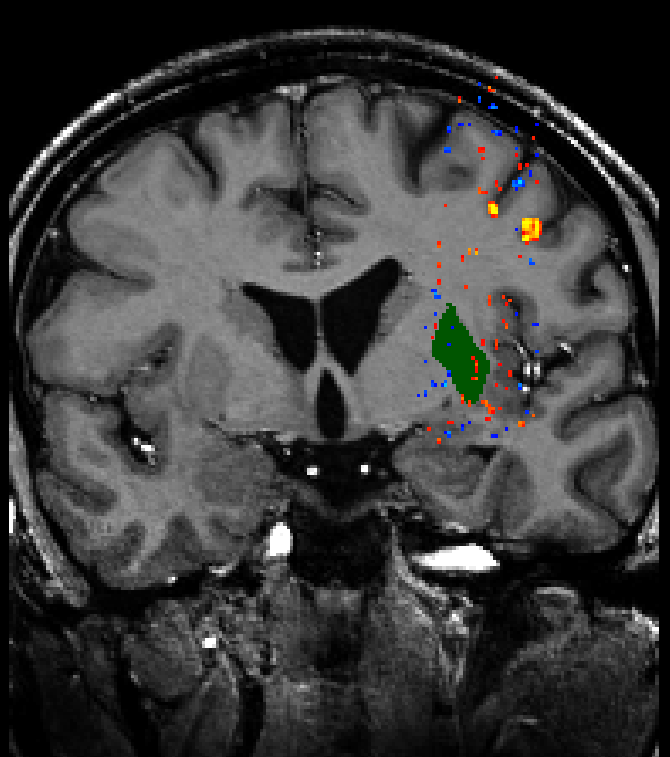

Why?
If you’re like me and have a lot of images to crop regularly then a more efficient way to crop is probably something that you need!
I used to do all my cropping manually with the mouse, and I will probably still do some cropping with the mouse. But when I often have a set of images that all need to be cropped then I always try to find the fastest way to do this in bulk.
There are many ways to tackle this issue
Of course there are pre-made software that will do this for you, and there are Python ways, C and C++ ways, using PowerPoint, Paint, PhotoShop (dare I say it) even MATLAB ways to achieve this. Yet ImageMagick has always been around! In fact, it was made way back in 1987 and now can easily read and write over 200 image file formats according to Wikipedia.
But aside from the extensive functionality, you can create images directly from the command line in bash. This means that you quite easily loop over all files in a directory and subject each file to the exact same editing options that you want them to have.
And this is great, especially for scientific papers since having a figure x number of pixels too big for some journals won’t cut the mustard.
How to make/ run the script
So since I always need to crop fMRI images in particular ways, (i.e. maybe I want to crop and only show a particular region for each participant), it would be relatively easy to achieve this.
Take the following example.

Let’s suppose I want to crop this region out and make a zoomed in part of this to get a closer look at the activation in this region.
I could do this in PowerPoint but now imagine I have 100 participants all with the same coloured region.
The bash script
The full script will be available on my GitHub here
- In the interest of keeping this blog short, I want to avoid talking about how arguments are parsed in the script but instead about what the script really does and the output.
The steps
Step 1
#!/usr/bin/env bash
# ... the code runs as a function and before this there is only a case statement and some variables are predefined, please see full script on my GitHub
# ---------------------
# STEP: 1
# ---------------------
# Create a temporary text file
temp_textfile=$(mktemp "$(dirname "$input_file")/temp_file.XXXXXX.txt")
# Convert the image to a text file
convert "$input_file" txt:- > "$temp_textfile"
# Find all coordinates of the specified color
coordinates=$(grep "srgb($color)" "$temp_textfile" | cut -d ':' -f 1)First the script converts the image into a temporary text file. The text file is essentially coordinates of the pixel plus what the pixel represents in RGB, hex and sRGB format. So a typical row might look like:
201,0: (2,2,2) #020202 srgb(2,2,2)
- The script allows the user to specify what colour to search for by using the following flag
-cplus the colour in RGB format without spaces i.e.-c 255,0,0
Step 2
# ---------------------
# STEP: 2
# ---------------------
# Find the minimum and maximum x and y coordinates
min_x=$(echo "$coordinates" | cut -d ',' -f 1 | sort -n | head -n 1)
max_x=$(echo "$coordinates" | cut -d ',' -f 1 | sort -n | tail -n 1)
min_y=$(echo "$coordinates" | cut -d ',' -f 2 | sort -n | head -n 1)
max_y=$(echo "$coordinates" | cut -d ',' -f 2 | sort -n | tail -n 1)
# Add padding to the minimum and maximum x and y coordinates
min_x=$((min_x - padding))
max_x=$((max_x + padding))
min_y=$((min_y - padding))
max_y=$((max_y + padding))The script uses this in order to find the pixels with a particular colour and saves the coordinates. Coordinates are first split into x and y by a comma
Here’s an example of the coordinates variable output:
…976,497 977,497 978,497 979,497 980,497 981,497 982,497 983,497 984,497 985,497 986,497 987,497 988,497 989,497 990,497 991,497 992,497 993,497 994,497 995,497 952,498 953,498 954,498 955,498…
The head and tail commands are used to get the highest and the lowest coordinate. These coordinates are then the ‘bounding box’ in which we want to cut out or draw a box around.
Here’s an example maximum and minimum x and y coordinates with the padding:
min x = 947 max x = 1014 min y = 452 max y = 562
- Note the padding can be altered by using the flag
-pplus a number of pixels (the default is 5)
Step 3
# ---------------------
# STEP: 3
# ---------------------
if [ "$type" == "crop" ]; then
echo "Crop"
temp_file=$(mktemp "$(dirname "$input_file")/temp.XXXXXX.png")
convert -size $(identify -format "%wx%h" "$input_file") xc:black -fill "white" \
-draw "rectangle $min_x,$min_y $max_x,$max_y" png:- > "$temp_file"
convert "$input_file" "$temp_file" -alpha off -compose copy_opacity \
-composite -trim +repage -geometry x$(identify -format "%h" "$temp_file") "$output_file"
# remove temp file
rm "$temp_file"
else
#...The easiest way for imagemagick to cut out a rectangle from an image is to create a mask first. So here we create a mask of the first image that was used to get the coordinates from. The mask is a black and white image that shows the region to cut out. The second command uses the mask to cut out the original image.
The region is then used to cut out from the original image as such:
Step 4
# ---------------------
# STEP: 4
# ---------------------
echo "Box"
# Draw bounding box around all the identified coordinates
convert "$input_file" -fill none -stroke white -strokewidth 3 \
-draw "stroke-dasharray 10 10 rectangle $min_x,$min_y $max_x,$max_y" "$output_file"
fi
# Remove the temporary text file
rm "$temp_textfile"I added another option in the script since sometimes we only want to draw an outline of the region on the original image this outputs the following image:
How to edit the command
- To edit some of the options in the script the user might want to pay attention to the following commands:
convert -size $(identify -format "%wx%h" "$input_file") xc:black -fill "white" \
-draw "rectangle $min_x,$min_y $max_x,$max_y" png:- > "$temp_file"
convert "$input_file" "$temp_file" -alpha off -compose copy_opacity \
-composite -trim +repage -geometry x$(identify -format "%h" "$temp_file") "$output_file"
convert "$input_file" -fill none -stroke white -strokewidth 3 \
-draw "stroke-dasharray 10 10 rectangle $min_x,$min_y $max_x,$max_y" "$output_file"Especially the third command in which we use the
stroke-dasharraythis essentially creates the white dashed line. Of course the stroke and the width can also be changed to what the user desires.In the future, I will perhaps add options when running the command in order to change how the output will look like without having to edit the 3 convert commands above.